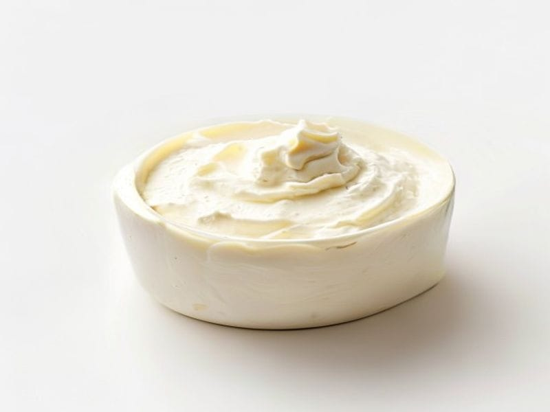

Nabiał i jaja
Serek homogenizowany (Danio)
Serek homogenizowany (Danio): 5.5 g białka, 105 kcal, 13 g węglowodanów i 3.5 g tłuszczu na 100 g. Kategoria: Nabiał i jaja.
Kalorie105 kcalna 100 g
Białko / proteiny5.5 g
Węglowodany13 g
Tłuszcz3.5 g
Cena (szac.)~1,95 złza 100 g
Ceny zaktualizowano: maj 2026 (szacunek — ceny w popularnych supermarketach)
Porcja: kubek (100g)
| Kalorie | 105 kcal |
|---|---|
| Białko | 5.5 g |
| Węglowodany | 13 g |
| Tłuszcz | 3.5 g |
| Cena (szac.) | ~1,95 zł |
Szczegółowe składniki odżywcze na 100 g
| Wartość energetyczna (kalorie) | 105 kcal |
|---|---|
| Białko (proteiny) | 5.5 g |
| Węglowodany | 13 g |
| Tłuszcz | 3.5 g |
| Tłuszcze nasycone | 2.2 g |
| Tłuszcze nienasycone | 1.3 g |
| Witaminy i minerały | Wapń, Witamina B2, Fosfor |
| Współczynnik kcal / 1 g białka | 19.1 |
| Cena produktu (szac. za 100 g) | ~1,95 zł |
| Cena za 100 g białka (szac.) | ~35,45 zł |